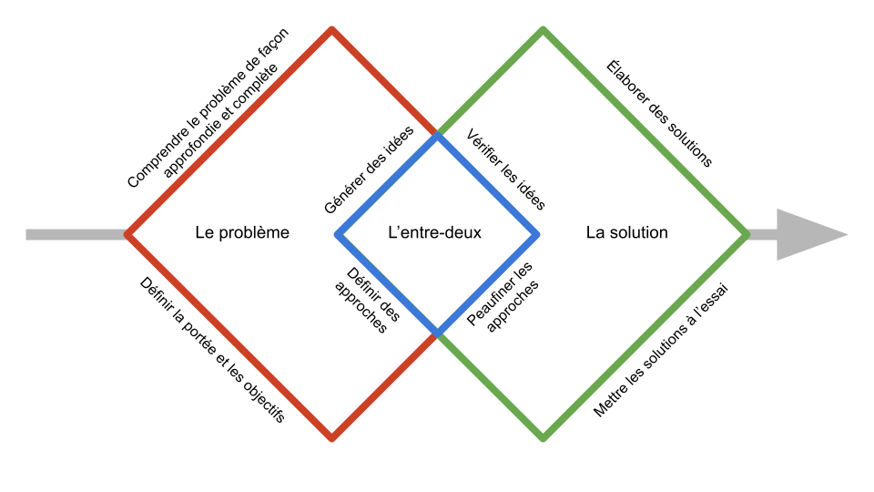

Comprendre la conception et les rôles de concepteur
Introduction
Ce document vous permettra de mieux comprendre la conception et les différents rôles qui s’y rattachent. Cette compréhension vous aidera à cibler les éléments précis que vous recherchez en ce qui a trait aux concepteurs et vous permettra d’embaucher les concepteurs qui répondent à vos besoins.
Dans ce document, vous trouverez la réponse aux questions suivantes :
- Quel est le spectre de la conception?
- Quelles sont les différentes méthodologies relatives à la conception du spectre de la conception?
- Quels sont les types de rôles de concepteur et que font-ils?
- Comment les rôles de concepteur se rattachent-ils aux méthodologies relatives à la conception?
Aperçu
La conception comme résolution de problèmes
Qu’est-ce que la conception? Laissez-nous tenter de répondre à cette question de façon courte et simple afin de donner le ton au reste du document.
La portée de la conception comprend les trois éléments suivants (figure 1) :
- Le problème;
- L’entre-deux;
- La solution.

Figure 1 : Le problème, la solution et l’entre-deux
Le problème est l’étape à laquelle débute la conception avec l’aide des concepteurs. Le but est de :
- Comprendre le problème présumé de façon approfondie et complète;
- Établir des hypothèses sur le problème (et NON sur la solution) qui seront validées plus tard;
- Définir la portée et les objectifs des efforts qui seront déployés afin de résoudre le problème.
L’entre-deux est l’étape à laquelle les activités de conception passent du problème à la solution. Le but est de :
- Générer des idées quant aux solutions potentielles;
- Définir des approches potentielles de mise en œuvre des solutions;
- Vérifier les idées et peaufiner les approches.
La solution est l’étape à laquelle les efforts de conception sont axés sur la prestation de solutions à l’aide d’idées bien élaborées et d’approches bien peaufinées visant à les mettre en œuvre. Le but est de :
- Élaborer une solution de façon itérative;
- Mettre la solution à l’essai fréquemment;
- Peaufiner la solution en fonction de la rétroaction et des données probantes.
Au sens défini plus haut, la conception est une approche de résolution des problèmes vous permettant de bien contextualiser votre problème, d’explorer avec créativité les solutions potentielles, d’élaborer efficacement une solution et d’atteindre vos objectifs de façon satisfaisante.
Le spectre de la conception
La conception est composée d’un spectre de méthodologies qui varient en ce qui a trait à leur portée, c’est-à-dire à quel point la solution et le problème sont détaillés. Ces méthodologies sont illustrées dans la figure 2.
Il est important de comprendre que la conception holistique fait appel à toutes ces méthodologies tout au long du cycle de vie d’un produit ou d’un service et qu’aucune méthode n’est plus ou moins importante qu’une autre.

Figure 2 : Les quatre niveaux de conception dans un spectre
Voici une brève description de chacune des méthodes; vous trouverez davantage de détails sur chacune d’entre elles plus bas.
La conception des services (niveau 4) touche tous les produits et les services de l’organisme et les personnes concernées, y compris les utilisateurs finaux qui les reçoivent et les employés qui en font la prestation. Elle est axée sur l’expérience globale et sur la façon dont les produits et les services interagissent afin de définir la mission de l’organisme et de mettre en œuvre sa vision.
La conception de l’expérience client (niveau 3) vise la qualité de l’expérience du début à la fin d’un groupe précis de clients avec une organisation et est axée sur l’ajout d’une valeur du point de vue de ce groupe. Autrement dit, il s’agit de l’expérience utilisateur sur une plus longue période (voir le prochain niveau).
La conception de l’expérience utilisateur (niveau 2) vise la qualité de l’expérience d’une personne lorsque celle-ci a recours à un produit ou un service précis afin de réaliser une tâche. Elle est axée sur l’utilité, l’intérêt et l’expérience de cette tâche.
La conception de l’interface utilisateur (niveau 1) vise les interactions individuelles que les utilisateurs finaux ont avec certaines composantes d’un produit ou d’un service. Elle est axée sur la simplicité, l’efficacité et l’efficience de ces interactions.
Afin de vous aider à comprendre les différentes portées de ces méthodes, voici une démonstration de comment celles-ci pourraient être utilisées pour contrer certains défis relatifs à la conception auxquels pourrait faire face une banque (figure 3) :
Figure 3 : Les quatre niveaux de conception pour une banque
Ces quatre niveaux de conception tentent d’atteindre différents objectifs de différentes façons. Ils sont particulièrement différents dans leur façon de trouver un équilibre entre deux axes (figure 4) :
- L’aspect stratégique et tactique de la résolution de problèmes;
- L’aspect expérientiel et corrélatif de la solution.
Figure 4 : Caractéristiques des quatre niveaux de conception (niveau 1 : conception de l’interface utilisateur; niveau 2 : conception de l’expérience utilisateur; niveau 3 : conception de l’expérience client; niveau 4 : conception des services)
Conception des services
La conception des services est la méthode ayant la plus large portée. Elle tient compte de toutes les personnes concernées : les clients qui reçoivent un produit ou un service et les employés qui en font la prestation. Elle tient également compte de comment les différents services interagissent et de comment l’organisation peut créer ou innover en matière de services afin d’atteindre sa mission et de mettre en œuvre sa vision.
« La conception des services permet aux organismes de voir leurs services du point de vue des clients. Il s’agit d’une approche de conception des services qui équilibre les besoins des clients et les besoins de l’entreprise qui vise à créer une expérience des services homogène et de qualité. La conception des services est ancrée dans la pensée conceptuelle et amène un processus créatif axé sur l’humain à l’amélioration des services et à la conception de nouveaux services. Grâce à des méthodes collaboratives qui mobilisent les clients et les équipes de prestation de services, la conception des services permet aux organismes de bien comprendre leurs services de bout en bout, laissant place à des améliorations holistiques et significatives. »
Source: traduction de This Is Service Design Doing: Applying Service Design Thinking in the Real World de Marc Stickdorn, Markus Edgar Hormess, Adam Lawrence et Jakob Schneider
Les trois principales composantes de la conception des services sont : les personnes, les accessoires et les processus.
Les personnes sont celles qui créent ou qui utilisent un service, dont tous ceux qui le font de façon indirecte (p. ex. employés, partenaires et utilisateurs).
Les accessoires sont les artefacts ou les produits qui sont utilisés pour la prestation du service, tels que l’espace physique, les pages Web, les médias sociaux ou les fichiers numériques.
Les processus sont les flux de travail, les procédures et les autres mécanismes suivis par un employé ou un utilisateur, tels que la résolution de problèmes à l’aide d’un soutien ou l’échange de dossiers.
La conception des services n’est pas tout simplement le fait de concevoir un service. Elle permet également d’examiner la façon dont un organisme en arrive à ses fins, comble ses lacunes organisationnelles et atteint ses buts.
Conception de l’expérience client
La conception de l’expérience client a une portée plus étroite que la conception des services. Elle tient compte de l’expérience du début à la fin d’un groupe précis de clients avec tous les produits et les services d’une organisation et perçoit cette expérience du point de vue de ces clients.
Souvent, la conception de l’expérience client chevauche plusieurs produits ou activités étant donné que le client, tout au long de son expérience avec l’organisme, touchera à plusieurs de ses facettes, de ses voies et de ses points de service.
La conception de l’expérience client débute tout simplement avec la prise de conscience initiale du client de l’organisme ainsi que de ses produits et services. Elle tient ensuite compte de la façon dont l’organisation pourrait ajouter une valeur du point de vue du client grâce à différents produits et services.
Autrement dit, la conception de l’expérience client est une subdivision de la conception de services qui ne tient compte que des produits et des services offerts à un certain groupe de clients.
Une autre façon de voir la conception de l’expérience client est qu’elle comprend plusieurs points de la conception de l’expérience utilisateur (voir ci-dessous).
Conception de l’expérience utilisateur
La conception de l’expérience utilisateur est une méthode axée sur l’expérience d’un groupe de clients avec un produit ou un service, voire une composante d’un produit ou d’un service.
Il s’agit d’une méthode qui crée des produits tangibles avec lesquels un utilisateur peut interagir directement. Elle est axée sur des mécanismes comme la création de solutions utiles et faciles à utiliser. Elle vise à améliorer l’expérience des utilisateurs qui interagissent avec un produit ainsi qu’à garantir que les utilisateurs trouvent utile ce qu’offrent les produits.
Les questions visant à savoir pourquoi un produit ou un point de service en particulier sont nécessaires sont examinées aux autres niveaux de conception (souvent lors de la conception de l’expérience client), tout comme les questions sur leur intégration à l’organisme (souvent lors de la conception des services).
Il est faux que la conception de l’expérience utilisateur est entièrement numérique. La conception de l’expérience utilisateur touche tous les points de service où les utilisateurs interagissent avec un produit ou un service. Par exemple, l’interaction entre un utilisateur et un centre d’appels relève de la conception de l’expérience utilisateur.
Conception de l’interface utilisateur
La conception de l’interface utilisateur est axée sur un élément précis d’un point de service. Il peut s’agit par exemple du mot utilisé sur un bouton d’une page Web servant à payer les articles d’un panier, de la couleur ou de l’emplacement de bouton sur la page.
La conception de l’interface utilisateur a pour but de permettre à l’organisme : de comprendre et d’anticiper les tâches qu’un utilisateur tentera d’accomplir à un point de service; de veiller à ce que les éléments du point de service soient accessibles, faciles à comprendre et conviviaux; et de faciliter des tâches de façon simple et efficace.
Haut
Rôles de concepteur
Vue d’ensemble
Les différents rôles de concepteur peuvent vous aider avec les différents niveaux de conception (figure 5) :

Figure 5 : Les rôles de concepteur et les quatre niveaux du spectre de conception qu’ils couvrent
Le rôle d’un concepteur ne couvre pas nécessairement qu’un seul niveau. Par exemple, un stratège en conception peut participer à la conception de l’expérience utilisateur et à la conception de l’expérience client.
Parmi les rôles de concepteur les plus communs, on compte les rôles généraux suivants. Il est important de noter que ces rôles peuvent porter différents titres. Notre objectif est de les décrire de façon générale et claire :
- Concepteur de services;
- Chercheur en conception;
- Rédacteur de conception;
- Concepteur de l’expérience utilisateur;
- Concepteur de l’interface utilisateur;
- Stratège en conception;
- Gestionnaire de la conception;
- Licorne de l’expérience utilisateur.
Concepteur de services
Le concepteur de services planifie, élabore et dirige l’amélioration du rendement d’un service ou la création de nouveaux services. Il s’assure que les services de l’organisme permettent au client d’atteindre ses objectifs, il aide le client à comprendre comment ces services s’harmonisent du point de vue de ce dernier et il travaille en vue d’améliorer l’expérience globale des utilisateurs auprès de l’organisme.
Parmi les responsabilités du concepteur de services, on compte :
- Contextualiser la demande et aider à définir la nécessité d’un service;
- Définir le succès et la façon de le mesurer;
- Personnaliser l’approche de conception et élaborer des spécifications sur mesure;
- Faciliter les communications internes afin de décloisonner les services ou les intervenants concernés par la réalisation du projet;
- Faire état des différentes options et modalités de la mise en œuvre du projet;
- Veiller à la cohérence du projet en mettant en perspective les besoins et la stratégie de l’organisme.
Le concepteur de services peut vous aider aux niveaux de conception suivants :
- Conception des services (niveau 4);
- Conception de l’expérience client (niveau 3).
Chercheur en conception
Le chercheur en conception communique avec l’utilisateur tout en réalisant des recherches quantitatives et qualitatives afin d’aider l’organisme à prendre des décisions en fonction de la valeur de ses services.
Parmi les responsabilités du chercheur en conception, on compte :
- Créer des stratégies de recherche sur les utilisateurs qui s’harmonisent aux objectifs de conception;
- Réaliser des recherches sur les utilisateurs;
- Réaliser et examiner des recherches quantitatives et qualitatives;
- Réaliser des études de convivialité auprès des utilisateurs finaux;
- Poser des questions, recueillir et analyser des données.
Le chercheur en conception peut vous aider aux niveaux de conception suivants :
- Conception des services (niveau 4);
- Conception de l’expérience client (niveau 3);
- Conception de l’expérience utilisateur (niveau 2);
- Conception de l’interface utilisateur (niveau 1).
Rédacteur de conception
Le rédacteur de conception écrit sur les produits et les services. Il guide l’utilisateur dans son utilisation de ces produits et de ces services afin de veiller à ce que celui-ci atteigne ses objectifs.
Il crée des mots afin de rendre efficace, concis et clair le texte lu par les utilisateurs dans le cadre de l’utilisation d’un produit ou d’un service. Le rédacteur de conception est un conteur qui se soucie du contenu du texte et qui tente de capter l’attention des utilisateurs.
Parmi les responsabilités du rédacteur de conception, on compte :
- Aider les autres à réaliser des tâches transactionnelles et informationnelles;
- Écrire de façon accessible (rédiger du contenu qui sera lu par un large éventail de personnes, y compris des personnes handicapées);
- Écrire en langage clair et simple;
- Écrire avec un ton approprié;
- Prioriser les renseignements importants ou pertinents.
Le rédacteur de conception peut vous aider aux niveaux de conception suivants :
- Conception de l’expérience client (niveau 3);
- Conception de l’expérience utilisateur (niveau 2);
- Conception de l’interface utilisateur (niveau 1).
Concepteur de l’expérience utilisateur
Le concepteur de l’expérience utilisateur conçoit les conditions et le contexte dans lequel les utilisateurs réalisent les tâches prévues d’un produit ou d’un service de façon efficace, efficiente et satisfaisante, principalement en créant des maquettes fonctionnelles (aperçu d’un produit ou d’un service), des flux de tâches et des spécifications relatives aux caractéristiques.
Parmi les responsabilités du concepteur de l’expérience utilisateur, on compte :
- Comprendre et définir les spécifications d’un produit;
- Définir un bon modèle d’interaction et en évaluer le succès;
- Élaborer des maquettes fonctionnelles et des prototypes en fonction des besoins des clients;
- Trouver des façons créatives de résoudre les problèmes liés à l’expérience utilisateur (p. ex. convivialité et repérabilité);
- Collaborer avec les concepteurs de l’interface utilisateur afin de mettre en place une conception attrayante.
Le concepteur de l’expérience utilisateur peut vous aider aux niveaux de conception suivants :
- Conception de l’expérience client (niveau 3);
- Conception de l’expérience utilisateur (niveau 2);
- Conception de l’interface utilisateur (niveau 1).
Concepteur de l’interface utilisateur
Le concepteur de l’interface utilisateur conçoit l’interface (numérique ou autre) au moyen de laquelle l’utilisateur ou le client entre en contact avec un produit ou un service.
Parmi les responsabilités du concepteur de l’interface utilisateur, on compte :
- Collaborer de près avec les développeurs, les concepteurs-rédacteurs et les concepteurs de l’expérience utilisateur;
- Créer et améliorer des maquettes fonctionnelles, des prototypes, des guides de styles et des flux d’utilisateurs;
- Faire part de décisions et d’idées de conception.
Le concepteur de l’interface utilisateur peut vous aider aux niveaux de conception suivants :
- Conception de l’interface utilisateur (niveau 1).
Stratège en conception
Le stratège en conception équilibre la mise en œuvre de la conception. Il établit des pratiques exemplaires et une base solide en ce qui a trait à l’expérience utilisateur pour les équipes et pour leurs projets.
Parmi les responsabilités du stratège en conception, on compte :
- Recueillir et assimiler les données relatives aux clients afin d’orienter la conception;
- Veiller à ce que les équipes de conception de l’expérience utilisateur harmonisent leur orientation au plan d’activité de leur organisme;
- Faciliter la prise de décisions stratégique axée sur les clients;
- Établir des relations entre les différents organismes pour aider les efforts de conception de l’expérience client à réussir.
Le stratège en conception peut vous aider aux niveaux de conception suivants :
- Conception des services (niveau 4);
- Conception de l’expérience client (niveau 3);
- Conception de l’expérience utilisateur (niveau 2).
Gestionnaire de la conception
Tout comme les autres types de gestionnaires, le gestionnaire de la conception gère l’équipe de conception et le rôle que celle-ci joue en ce qui a trait aux objectifs et aux projets de conception en général.
Le rôle du gestionnaire de la conception peut porter différents titres au sein de différents organismes en fonction de l’étendue de ses responsabilités. Les gestionnaires de la conception des services, les gestionnaires de l’expérience client, les gestionnaires de l’expérience utilisateur et les gestionnaires de l’interface utilisateur sont tous des gestionnaires de la conception; chacun d’entre eux se spécialise dans un aspect différent de la conception, bien que leurs rôles relèvent tous du volet de conception de la gestion.
Parmi les responsabilités du gestionnaire de la conception, on compte :
- Veiller au perfectionnement du personnel de l’équipe de conception;
- Superviser les professionnels de la conception qui font partie de l’équipe;
- Travailler en collaboration avec l’organisme afin de définir ce qui est attendu de la part de l’équipe;
- Cibler les occasions de conception;
- Créer et gérer de nouveaux projets de conception;
- Créer et gérer de nouveaux produits (sur le plan de la conception);
- Communiquer avec la haute direction et lui faire part de la stratégie de conception, des projets de conception et de la conception des produits.
Le gestionnaire de la conception peut vous aider aux niveaux de conception suivants :
- Conception des services (niveau 4);
- Conception de l’expérience client (niveau 3);
- Conception de l’expérience utilisateur (niveau 2);
- Conception de l’interface utilisateur (niveau 1).
Licorne de l’expérience utilisateur
Malheureusement, la licorne de l’expérience utilisateur n’existe pas.
Ce concept erroné a porté plusieurs personnes à croire qu’un seul employé peut combler tous les besoins de conception possibles. Cette affirmation est terriblement fausse.
Il y a de fortes chances qu’il vous soit très peu probable de trouver une seule personne étant en mesure de tout faire sur le spectre de la conception. Il s’agit d’une autre raison pourquoi il est essentiel de bien cibler et spécifier vos besoins.
Il y a en effet des concepteurs dont les diverses compétences leur permettent de faire différentes tâches en lien avec la conception; vous pourriez avoir besoin d’eux plus souvent que vous ne le croyez. Il est important de noter, par contre, que, de nos jours, la conception est presque toujours un effort collaboratif.
« La plupart des artistes, s’ils sont honnêtes, ne sont pas des artistes solos… » — Thom Yorke
La licorne de l’expérience utilisateur peut vous aider aux niveaux de conception suivants :
- (Aucun) Si quelqu’un vous dit le contraire, ne croyez pas aux miracles.
Haut
Ressources additionnelles (en anglais seulement*)
* Les auteurs s'engagent à ajouter ou à remplacer par des ressources équivalentes en français au fur et à mesure de leur création et de leur découverte, tout en fournissant les meilleures ressources disponibles, quelle que soit leur langue. Si vous préférez lire les ressources en français, il existe des outils comme Google Translate, qui sont disponibles gratuitement pour traduire des documents ou des pages web de l'anglais au français.
- Service Design 101
- What is Service Design
- The Principles of Service Design Thinking - Building Better Services
- This is Service Design Doing Method Library
- What is Customer Experience Design
- The Definition of User Experience (UX)
- DesignOps 101
- What a UX Career Looks Like Today
- UX Writing, UX Copywriting, Content Strategy, and Content Design are not the same job
- What is UX Research
- Introduction to UX Strategy
- What is UX Management
- What is a UX Manager
- Unicorns, Foxes, Hedgehogs, the UX Design Bestiary
- The Rise of UX Writer
Haut
Aide
Le Centre d’expertise en conception axée sur l’être humain peut vous aider à évaluer vos besoins en matière d’embauche de concepteurs.
Pour nous joindre, envoyez-nous un courriel, ou joignez-vous à notre groupe officiel sur Microsoft Teams.
Conditions d'utilisation
Les documents que l’on trouve sur ce site Web ont été produits ou rassemblés pour offrir aux Canadiens et Canadiennes de l’information sur les programmes et services offerts par le gouvernement du Canada. Ils sont assujettis aux conditions suivantes.
- Date de modification :